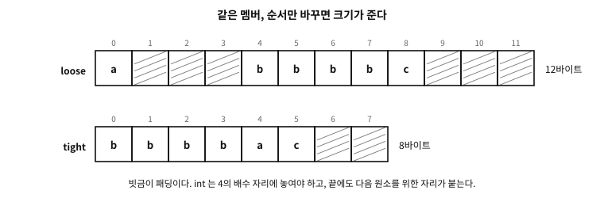

46 구조체
먼저 알아야 할 것
돌아보기
23장에서 “타입은 값의 집합 + 연산의 약속”이라 했고, 지금까지 쓴 타입은 전부 미리 있는 것들(int, double, char, 포인터)이었다. 그러면 프로그래머가 새 타입을 만든다는 것은 무슨 뜻인가?
답. 기억의 모양을 새로 정하고 이름을 붙이는 일이다. “정수 둘이 나란히 있는 덩어리를 점(point)이라 부르겠다”고 선언하면, 그 순간부터 point는 변수를 만들고 함수에 넘기고 배열로 늘어놓을 수 있는 어엿한 타입이 된다. 38장의 배열이 같은 타입의 반복이었다면, 구조체(struct)는 다른 타입의 묶음이다 — 그리고 그 묶음에 이름이 붙는 순간, 프로그램의 어휘가 늘어난다.
이 장의 필요성과 맥락
-> 도 배열 멤버도 설명할 수 없다. 8부가 7부 바로 뒤인 것은 우연이 아니다.이 장이 끝나면
.와 ->), 그리고 구조체가 값으로 오가는 방식까지.이 장에서 답할 질문
- 그러면 항상 큰 멤버부터 적어야 하는가?
- 포인터가 “0으로 채워진다”와 “널이 된다”는 같은 말 아닌가?
struct point라고 매번struct를 붙이는 것이 번거롭다 — 줄일 수 없는가?- 구조체 안에 자기 자신을 멤버로 넣을 수 있는가 — 리스트 같은 것을 만들려면 필요할 것 같은데.
(26장의 갈래에서 구조체는 집합체 타입이자 파생 타입이었다. 이 장은 그 칸의 속이다.)
46.1 선언, 초기화, 접근
examples/ch46/point.c
#include <stdio.h>
struct point {
int x;
int y;
};
struct point moved(struct point p, int dx, int dy)
{
return (struct point){ .x = p.x + dx, .y = p.y + dy }; /* 복합 리터럴 */
}
int main(void)
{
struct point a = { .x = 3, .y = 4 }; /* 지정 초기화 */
struct point b = moved(a, 10, -1);
printf("a = (%d, %d)\n", a.x, a.y); /* 값으로 접근: . */
printf("b = (%d, %d)\n", b.x, b.y);
struct point *p = &b;
printf("p->x = %d\n", p->x); /* 포인터로 접근: -> */
printf("sizeof(struct point) = %zu\n", sizeof(struct point));
return 0;
}
실행 결과
a = (3, 4)
b = (13, 3)
p->x = 13
sizeof(struct point) = 8
선언은 struct point { int x; int y; }; — 중괄호 안의 각 항목을 멤버(member)라 부른다. 이 선언 자체는 기억을 잡지 않는다. “이런 모양의 타입이 있다”는 정의일 뿐이고, struct point a;처럼 써야 변수가 생긴다.
초기화는 시연처럼 멤버 이름을 적는 지정 초기화(designated initializer, C99)를 권한다 — { .x = 3, .y = 4 }. 순서에 기대는 {3, 4}보다 읽기 좋고, 멤버가 늘거나 순서가 바뀌어도 안전하다. 적지 않은 멤버는 0으로 채워진다.
접근은 두 표기다 — 값에는 점(a.x), 포인터에는 화살표(p->x). 화살표는 사실 (*p).x의 줄임이다(35장의 역참조 + 점). 포인터로 구조체를 다루는 일이 압도적으로 흔해서 전용 표기를 둔 것이다.
복합 리터럴 — 시연의 (struct point){ .x = ..., .y = ... }는 “그 자리에서 이름 없는 구조체 값을 하나 만드는” 표기다(C99). 반환값이나 인자로 구조체를 즉석에서 넘길 때 요긴하다.
46.2 sizeof의 첫 놀라움 — 멤버 크기의 합이 아니다
구조체를 만들고 크기를 물어보면 대개 예상이 빗나간다.
examples/ch46/sizeof_first.c
/* 멤버 크기를 더한 값과 구조체의 크기는 왜 다른가 — 배치를 직접 인쇄한다. */
#include <stddef.h>
#include <stdio.h>
/* 같은 멤버, 순서만 다르다 */
struct loose { char a; int b; char c; }; /* 작은 것 사이에 큰 것 */
struct tight { int b; char a; char c; }; /* 큰 것부터 */
int main(void)
{
printf("sum of the member sizes: %zu + %zu + %zu = %zu bytes\n",
sizeof(char), sizeof(int), sizeof(char),
sizeof(char) * 2 + sizeof(int));
printf("\nstruct loose { char a; int b; char c; }\n");
printf(" sizeof = %zu, _Alignof = %zu\n",
sizeof(struct loose), alignof(struct loose));
printf(" offsetof(a) = %zu, offsetof(b) = %zu, offsetof(c) = %zu\n",
offsetof(struct loose, a), offsetof(struct loose, b),
offsetof(struct loose, c));
printf("\nstruct tight { int b; char a; char c; }\n");
printf(" sizeof = %zu, _Alignof = %zu\n",
sizeof(struct tight), alignof(struct tight));
printf(" offsetof(b) = %zu, offsetof(a) = %zu, offsetof(c) = %zu\n",
offsetof(struct tight, b), offsetof(struct tight, a),
offsetof(struct tight, c));
/* 배치를 그림처럼 그려 본다: 멤버가 차지한 칸은 이름으로, 빈자리는 . 으로 */
puts("\nlayout cell by cell (numbers are offsets, dots are padding):");
for (size_t i = 0; i < sizeof(struct loose); i++) {
char mark = '.';
if (i == offsetof(struct loose, a)) mark = 'a';
else if (i >= offsetof(struct loose, b)
&& i < offsetof(struct loose, b) + sizeof(int)) mark = 'b';
else if (i == offsetof(struct loose, c)) mark = 'c';
printf("%c", mark);
}
printf(" <- loose (%zu bytes)\n", sizeof(struct loose));
for (size_t i = 0; i < sizeof(struct tight); i++) {
char mark = '.';
if (i < sizeof(int)) mark = 'b';
else if (i == offsetof(struct tight, a)) mark = 'a';
else if (i == offsetof(struct tight, c)) mark = 'c';
printf("%c", mark);
}
printf(" <- tight (%zu bytes)\n", sizeof(struct tight));
/* 배열로 늘어놓으면 차이가 곱해진다 */
printf("\nwith a million elements: loose %zu MiB, tight %zu MiB\n",
sizeof(struct loose) * 1000000u / (1024 * 1024),
sizeof(struct tight) * 1000000u / (1024 * 1024));
return 0;
}
실행 결과
sum of the member sizes: 1 + 4 + 1 = 6 bytes
struct loose { char a; int b; char c; }
sizeof = 12, _Alignof = 4
offsetof(a) = 0, offsetof(b) = 4, offsetof(c) = 8
struct tight { int b; char a; char c; }
sizeof = 8, _Alignof = 4
offsetof(b) = 0, offsetof(a) = 4, offsetof(c) = 5
layout cell by cell (numbers are offsets, dots are padding):
a...bbbbc... <- loose (12 bytes)
bbbbac.. <- tight (8 bytes)
with a million elements: loose 11 MiB, tight 7 MiB
char+int+char이니 6바이트일 것 같은데 12바이트다. 남는 6바이트는 패딩(padding) (padding), 즉 멤버 사이와 끝에 놓인 빈자리다.

그림 46.1 — 빗금이 패딩이다. 멤버는 자기 정렬의 배수 자리에 놓이고, 끝에도 자리가 붙는다.
이유는 6장의 정렬이다. int는 4의 배수 주소에 놓여야 하므로 첫 char 뒤에 3바이트가 비고, 마지막 char 뒤에도 3바이트가 붙는다 — 이 구조체를 배열로 늘어놓았을 때 다음 원소의 int도 정렬을 지켜야 하기 때문이다.
규칙은 셋뿐이다.
- 각 멤버는 자기 정렬의 배수 오프셋에 놓인다.
- 구조체의 정렬은 멤버 정렬의 최댓값이다.
- 구조체의 크기는 그 정렬의 배수로 올림된다(꼬리 패딩).
그래서 멤버 순서만 바꿔도 크기가 준다. 시연의 tight은 큰 것부터 늘어놓아 12바이트를 8바이트로 줄였다. 원소 100만 개면 11 MiB와 7 MiB의 차이다 — 기억만 아끼는 것이 아니라 캐시에 들어가는 원소 수가 달라진다(11장).
배치를 눈으로 확인하는 도구가 <stddef.h>의 offsetof다. 시연이 그것으로 각 멤버가 몇 번째 바이트에서 시작하는지 인쇄했다. 「내 생각과 다르면 물어본다」가 이 자리의 요령이다.
문. 그러면 항상 큰 멤버부터 적어야 하는가?
답. 기본값으로 삼을 만하지만 규칙으로 삼을 것은 아니다. 읽기 좋은 순서가 더 중요한 경우가 많고(관련된 멤버를 붙여 두는 것), 구조체 하나만 만드는 자리에서는 몇 바이트가 문제 되지 않는다.
순서를 의식해야 하는 자리는 분명하다 — 같은 구조체를 아주 많이 늘어놓을 때(배열·풀·노드), 그리고 기억이 빠듯한 임베디드다. 그 밖에서는 크기를 한 번 인쇄해 보고 놀라지 않는 정도면 된다.
패딩을 없애는 장치(#pragma pack·packed)와 정렬을 올리는 장치 (alignas)는 47장에서 본다. 먼저 알아 둘 것은 그것들이 표준이 아니거나 대가가 있다는 사실이다.
46.3 통째로 0으로 — { 0 }과 { }
앞 절 끝에서 “적지 않은 멤버는 0으로 채워진다”고 한 마디로 넘어갔는데, 이 문장은 실무에서 매일 쓰이는 관용구의 근거이므로 따로 볼 값어치가 있다.
struct config c = {0}; /* 오래된 관용구 */
struct config c = {}; /* C23 부터 — 빈 초기자 */examples/ch46/zeroinit.c
/* 통째로 0으로 — { 0 } 과 C23 의 { } 는 포인터 멤버까지 널로 만든다. */
#include <stdio.h>
#include <string.h>
struct inner { int k; char *note; };
struct config {
int retries;
char *path; /* 포인터 멤버 */
double ratio;
struct inner in; /* 안에 또 포인터가 있다 */
char name[4];
};
static void dump(const char *tag, const struct config *c)
{
printf("%s retries=%d path=%s ratio=%g in.k=%d in.note=%s name[0]=%d\n",
tag, c->retries,
c->path == NULL ? "null" : "not null",
c->ratio, c->in.k,
c->in.note == NULL ? "null" : "not null",
c->name[0]);
}
static void bytes(const char *tag, const void *p, size_t n)
{
const unsigned char *b = p;
size_t zero = 0;
for (size_t i = 0; i < n; i++)
zero += (b[i] == 0);
printf("%s %zu bytes, %zu of them zero\n", tag, n, zero);
}
int main(void)
{
struct config a = {0}; /* 첫 멤버만 명시, 나머지는 기본 초기화 */
struct config b = {}; /* C23: 빈 초기자 — 객체 전체가 기본 초기화 */
dump("{0} :", &a);
dump("{ } :", &b);
/* 지정 초기화도 마찬가지다 — 적지 않은 멤버는 기본 초기화된다 */
struct config c = { .retries = 3 };
dump("{.retries=3}:", &c);
/* memset 은 '모든 비트 0' 이지 '널'이 아니다 — 이 구현에서는 같지만
표준이 같다고 보장하지 않는다. */
struct config m;
memset(&m, 0, sizeof m);
printf("is path null after memset: %s (on this implementation)\n",
m.path == NULL ? "yes" : "no");
printf("\nsizeof(struct config) = %zu, sum of member sizes = %zu - the difference is padding\n",
sizeof(struct config),
sizeof(int) + sizeof(char *) + sizeof(double)
+ sizeof(struct inner) + 4);
bytes("{0} :", &a, sizeof a);
bytes("{ } :", &b, sizeof b);
return 0;
}
실행 결과
{0} : retries=0 path=null ratio=0 in.k=0 in.note=null name[0]=0
{ } : retries=0 path=null ratio=0 in.k=0 in.note=null name[0]=0
{.retries=3}: retries=3 path=null ratio=0 in.k=0 in.note=null name[0]=0
is path null after memset: yes (on this implementation)
sizeof(struct config) = 48, sum of member sizes = 40 - the difference is padding
{0} : 48 bytes, 48 of them zero
{ } : 48 bytes, 48 of them zero
46.3.1 무엇이 보장되는가
표준(C23 §6.7.11)은 이것을 기본 초기화(default initialization)라는 이름으로 정의한다. 명시적으로 초기화되지 않은 부분은 다음과 같이 채워진다.
| 멤버의 타입 | 무엇으로 채워지는가 |
|---|---|
| 포인터 | 널 포인터 |
| 산술 타입(정수·부동소수) | (양의 또는 부호 없는) 0 |
| 십진 부동소수 | 양의 0. 양자 지수는 구현 정의 |
| 집합체(구조체·배열·공용체) | 재귀적으로 같은 규칙을 다시 적용 |
표 46.1
여기서 이 절의 핵심 질문에 답이 나온다 — 포인터 멤버는 널로 초기화된다. 그것도 안에 든 구조체의 포인터 멤버까지 재귀적으로 그렇다. 시연에서 path도 in.note도 널로 나오는 것이 그 확인이다.
문. 포인터가 “0으로 채워진다”와 “널이 된다”는 같은 말 아닌가?
답. 같은 결과가 되는 구현이 압도적으로 많지만, 약속의 내용이 다르다.
표준이 보장하는 것은 “널 포인터 값이 된다”이지 “모든 비트가 0이 된다”가 아니다(36장에서 본 널의 정체). 널의 표현이 모든 비트 0이 아닌 구현이 과거에 실제로 있었고, 표준은 지금도 그 여지를 남겨 둔다. 그래서 {0}·{}은 어디서나 널을 주지만, memset(&c, 0, sizeof c)는 “모든 비트 0”만 줄 뿐이다. 두 약속이 갈리는 구현에서는 후자가 널이 아니다.
부동소수도 같은 이야기다 — {0}은 값 0.0을 약속하고, memset은 비트열만 약속한다. 36장의 시연이 이 구조체를 두 방법으로 비워 바이트를 나란히 인쇄한다 — 이 기계에서는 결과가 같고, 약속은 다르다. 실무의 결론은 간단하다: 구조체를 비울 때는 초기자를 쓰고, memset은 초기화가 아니라 다른 목적(뒤에 나올 패딩)일 때 쓴다.
46.3.2 {0}과 {}의 미세한 차이 — 패딩
둘은 거의 같지만 한 자리에서 갈린다. C23은 기본 초기화되는 집합체에 대해 “모든 패딩이 0 비트로 초기화된다”고 못박는다. {}은 객체 전체가 기본 초기화의 대상이므로 멤버 사이의 빈틈까지 0이다. 반면 {0}은 첫 멤버를 명시한 초기화이므로, 기본 초기화의 대상은 나머지 멤버들이고 구조체 자신의 패딩 바이트는 그 대상이 아니다 — 값이 미지정이다.
시연에서 48바이트가 모두 0으로 나오지만, 그것은 이 구현이 그렇게 한다는 뜻일 뿐 약속이 아니다.
이 차이는 대개 무의미하지만, 구조체를 memcmp로 통째 비교하거나 파일· 네트워크로 바이트째 내보낼 때는 갑자기 중요해진다. 그럴 때의 규칙은 이렇다.
- 값의 의미만 필요하다 →
{0}또는{}. - 패딩까지 0이어야 한다(비교·직렬화) → C23이면
{}, 아니면memset뒤에 필요한 멤버를 다시 대입한다.
흔한 오해. “{0}은 첫 멤버만 0으로 만든다”
아니다. {0}이 명시하는 것은 첫 멤버 하나지만, 적지 않은 나머지는 전부 기본 초기화된다(§6.7.11). 그래서 멤버가 100개여도 {0} 하나로 전부 0·널이 된다.
거꾸로 된 오해도 흔하다 — “{ .retries = 3 }처럼 일부만 적으면 나머지는 쓰레기값이다”라는 것. 역시 아니다. 지정 초기화든 순서 초기화든, 초기자가 하나라도 있으면 적지 않은 멤버는 기본 초기화된다. 시연의 세 번째 줄이 그 확인이다. 쓰레기값이 되는 경우는 초기자를 아예 쓰지 않았을 때다 (struct config c;).
플랫폼 노트. `{}`을 쓸 수 있는가
{}는 C23에서 표준이 되었다. 그 전에도 GCC와 Clang이 확장으로 받아들였지만 이식성 있는 코드는 아니었다. C17 이하를 함께 지원해야 하면 {0}을 쓰되, 첫 멤버가 구조체나 배열이면 컴파일러가 경고를 낼 수 있어서 { {0} }처럼 겹쳐 써야 하는 경우가 있다. {}은 그런 성가심이 없다는 것이 또 하나의 장점이다.46.4 구조체는 값이다
C에서 구조체는 값처럼 다뤄진다 — 대입하면 통째로 복사되고, 함수에 넘기면 33장의 규칙 그대로 복사되어 건너가며, return으로 통째로 돌려 줄 수도 있다. 시연의 moved(a, 10, -1)이 그 확인이다: a는 그대로이고 새 값 b가 나왔다.
이 복사는 멤버를 그대로 옮겨 적는 얕은 복사(shallow copy)다. 멤버가 전부 수라면 문제가 없지만, 멤버 중에 포인터가 있으면 주소가 그대로 복제되어 원본과 사본이 같은 곳을 가리키게 된다 — 이 사실이 뒤에서 자기를 가리키는 자료를 다룰 때 결정적인 함정이 된다.
다만 실무에서는 큰 구조체를 값으로 주고받는 대신 포인터로 넘기는 관행이 흔하다 — 복사 비용을 아끼기 위해서다(11장의 기억 사다리를 떠올리면 큰 덩어리의 복사가 공짜가 아님이 보인다). 읽기만 할 때는 const struct point *p처럼 const 포인터로 받는 것이 관행이다 — 23장의 const가 “이 함수는 원본을 건드리지 않는다”는 계약 표시로 일하는 것이다.
문. struct point라고 매번 struct를 붙이는 것이 번거롭다 — 줄일 수 없는가?
답. 전통적으로는 typedef로 별명을 만들어 왔다 — typedef struct point point_t;처럼. 다만 취향과 유파가 갈리는 지점이라(별명이 “이것이 구조체”라는 정보를 감춘다는 반론이 있다), 이 책은 지면에서 정체가 보이도록 struct를 붙여 쓴다. 어느 쪽이든 일관성이 중요하다.
문. 구조체 안에 자기 자신을 멤버로 넣을 수 있는가 — 리스트 같은 것을 만들려면 필요할 것 같은데.
답. 자기 자신을 값으로 담을 수는 없다(무한한 크기가 되므로). 그러나 자신을 가리키는 포인터는 담을 수 있고, 바로 그것이 연결 자료구조의 씨앗이다: struct node { int value; struct node *next; }; 이 한 줄에 35장의 포인터와 45장의 동적 메모리가 만나면 연결 리스트·트리 같은 구조가 열린다 — 이 책의 범위를 넘는 자료구조의 세계이지만, 문을 여는 열쇠가 여기 있다는 것은 알아 둘 만하다.
46.4.1 대입은 되는데 비교는 안 되는 이유
구조체는 값이라 b = a; 한 줄로 통째로 복사된다. 그런데 a == b는 없다 — 컴파일 오류다. 왜 대입은 되고 비교는 안 되는가?
패딩 때문이다. 대입은 「멤버의 값들을 옮긴다」로 정의할 수 있지만, 비교는 「같은가」를 물어야 하는데 패딩의 값이 정해져 있지 않다. 같은 값을 담은 두 구조체라도 패딩에 다른 쓰레기가 있을 수 있고, 그러면 비트로 견주는 순간 「다르다」가 나온다.
흔한 오해. “그러면 memcmp로 견주면 되지 않는가”
가장 흔한 대체 시도이고, 조용히 틀린다. memcmp는 표현을 견준다 — 멤버뿐 아니라 패딩까지 본다.
47장의 시연이 이것을 실물로 보인다. 멤버가 전부 같은 두 구조체인데 memcmp가 「다르다」를 돌려준다. 반대 방향의 사고도 있다 — 패딩이 우연히 같으면 「같다」가 나오지만, 그것은 운이지 계약이 아니다.
같은 이유로 구조체를 통째로 해시하면 안 되고(같은 값이 다른 해시를 낸다), 통째로 파일이나 네트워크에 내보내도 안 된다(47장에서 자세히 본다).
처방은 하나다 — 멤버별로 비교하는 함수를 만든다.
bool point_eq(struct point a, struct point b)
{ return a.x == b.x && a.y == b.y; }46.5 머리와 데이터를 한 덩어리로 — 유연 배열 멤버
구조체 뒤에 길이가 정해지지 않은 데이터가 따라오는 모양은 아주 흔하다 — 메시지, 패킷, 문자열을 담은 노드. C99가 이 무늬를 정식으로 들여왔다.
유연 배열 멤버(flexible array member)는 구조체의 마지막 멤버로, 크기를 비워 둔 배열이다.
examples/ch46/flexible.c
/* 유연 배열 멤버 — 머리와 데이터를 한 덩어리로 잡는 C99 의 장치. */
#include <stdckdint.h>
#include <stddef.h>
#include <stdio.h>
#include <stdlib.h>
#include <string.h>
/* 마지막 멤버의 크기를 비워 두면 '유연 배열 멤버'다.
sizeof 에는 이 멤버가 들어가지 않는다 — 크기는 잡을 때 정한다. */
struct msg {
unsigned kind;
size_t len;
char data[]; /* ← 유연 배열 멤버 */
};
/* 잡을 크기 = 머리 + 데이터. 넘침 검사를 빠뜨리면 작은 그릇에 큰 배열이 된다. */
static struct msg *msg_new(unsigned kind, const char *text)
{
size_t len = strlen(text);
size_t need;
/* offsetof(struct msg, data) 가 sizeof(struct msg) 보다 정확하다 —
꼬리 패딩을 두 번 세지 않는다. */
if (ckd_add(&need, offsetof(struct msg, data), len)) return nullptr;
struct msg *m = malloc(need);
if (!m) return nullptr;
m->kind = kind;
m->len = len;
memcpy(m->data, text, len);
return m;
}
int main(void)
{
printf("sizeof(struct msg) = %zu <- data is not counted\n",
sizeof(struct msg));
printf("offsetof(struct msg, data) = %zu\n", offsetof(struct msg, data));
printf("alignof(struct msg) = %zu\n", alignof(struct msg));
const char *text = "hello, world!";
struct msg *m = msg_new(7, text);
if (!m) { perror("malloc"); return 1; }
printf("\nsize reserved = offsetof(data) + %zu = %zu bytes\n",
m->len, offsetof(struct msg, data) + m->len);
printf("kind = %u, len = %zu, data = \"%.*s\"\n",
m->kind, m->len, (int)m->len, m->data);
/* 머리와 데이터가 한 덩어리라 free 도 한 번이다 */
free(m);
puts("\ndifference from the old practice:");
puts(" char data[1]; <- the 'struct hack'. The size arithmetic is off by one,");
puts(" and it read past the array, outside the contract.");
puts(" char data[]; <- what C99 made official. Inside the contract.");
return 0;
}
실행 결과
sizeof(struct msg) = 16 <- data is not counted
offsetof(struct msg, data) = 16
alignof(struct msg) = 8
size reserved = offsetof(data) + 13 = 29 bytes
kind = 7, len = 13, data = "hello, world!"
difference from the old practice:
char data[1]; <- the 'struct hack'. The size arithmetic is off by one,
and it read past the array, outside the contract.
char data[]; <- what C99 made official. Inside the contract.
세 가지가 계약이다.
- 마지막 멤버여야 하고, 그 앞에 멤버가 하나 이상 있어야 한다.
sizeof에 포함되지 않는다. 시연에서sizeof(struct msg)와offsetof(struct msg, data)가 같은 값으로 나오는 것이 그 뜻이다.- 크기는 잡을 때 정한다.
malloc(offsetof(…, data) + 길이)가 정석이다.
sizeof 대신 offsetof를 쓰는 이유가 있다. sizeof는 꼬리 패딩을 포함하므로 그만큼을 두 번 세게 된다 — 틀리지는 않지만 조금 더 잡는다. 그리고 길이 계산은 반드시 넘침을 검사한다(75장) — 큰 길이가 감아 돌면 작은 그릇에 큰 데이터를 쓰게 되고, 그것이 바로 힙 오버플로다.
실제 사례. 「구조체 해킹」에서 정식 문법으로
C99 이전에도 같은 일을 하고 싶었던 사람들은 마지막 멤버를 char data[1]로 적었다. 그리고 잡을 때 malloc(sizeof(struct msg) + len - 1)처럼 1을 빼거나 더하며 셈을 맞췄다. 이것이 「구조체 해킹」(struct hack)이라 불린 관행이다.
잘 돌아갔지만 계약 밖이었다 — 원소가 하나뿐인 배열의 두 번째 원소를 건드리는 것이기 때문이다. 컴파일러가 그 사실을 근거로 최적화하면 무너질 수 있었다.
C99가 char data[]를 정식으로 들이면서 이 회색지대가 사라졌다. 옛 코드에서 [1]을 보면 그 시대의 흔적으로 읽고, 새로 쓸 때는 []를 쓴다.
값들을 묶는 법과 그 값이 기억에 놓이는 모양을 함께 얻었다. 다음 장은 그것을 부리는 법이다 — 그 자리에서 만들어 넘기는 임시 구조체, 순서 없는 이름 붙은 인자, 패딩을 다루는 장치들, 그리고 구조체를 통째로 저장하거나 보내면 안 되는 이유.